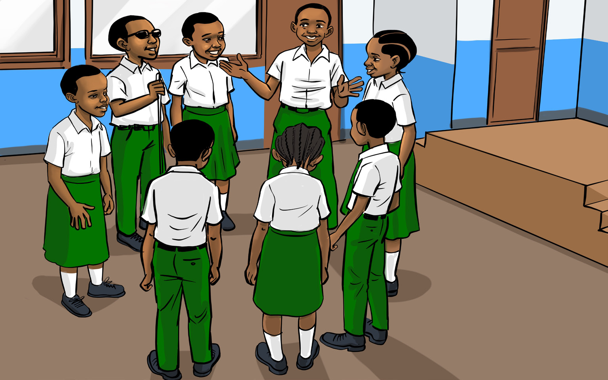

English for Secondary Schools Student’s Book Form One, printed page 138
(d) Study the following picture and answer the questions that follow.

Seven students in school uniform stand in a circle outside a classroom, talking together.
Task symbol: a blue clipboard with a pen and four checked boxes.

Task
In a manageable group, make a conversation on one of the following scenarios and act out to the class.
-
1. A teacher holds a conversation with his/her student whose academic performance is low.
-
2. A police officer sees a man breaking into someone’s car, catches him and takes him to the police station for interrogation.